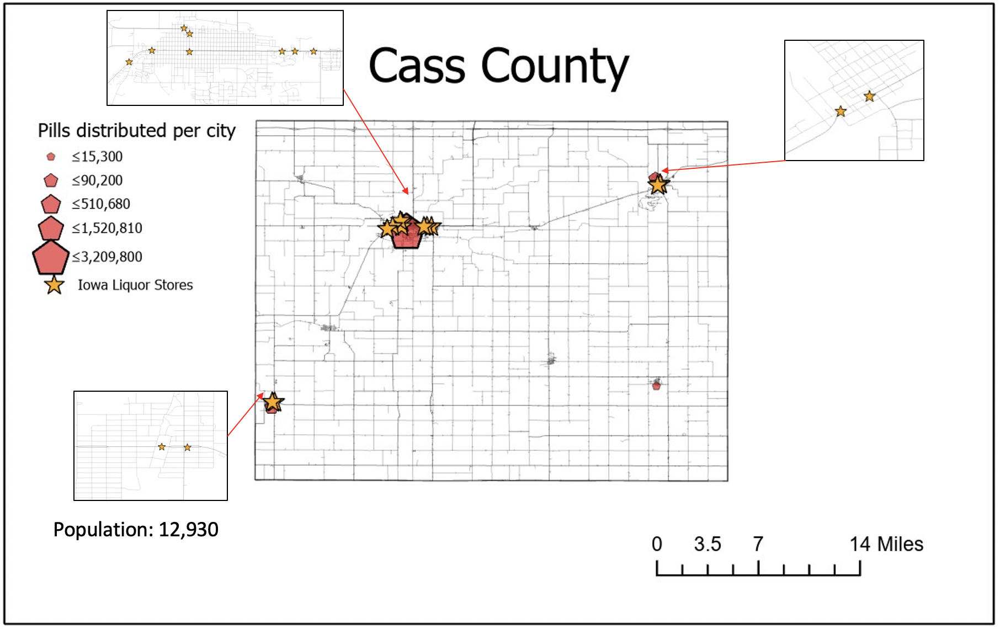
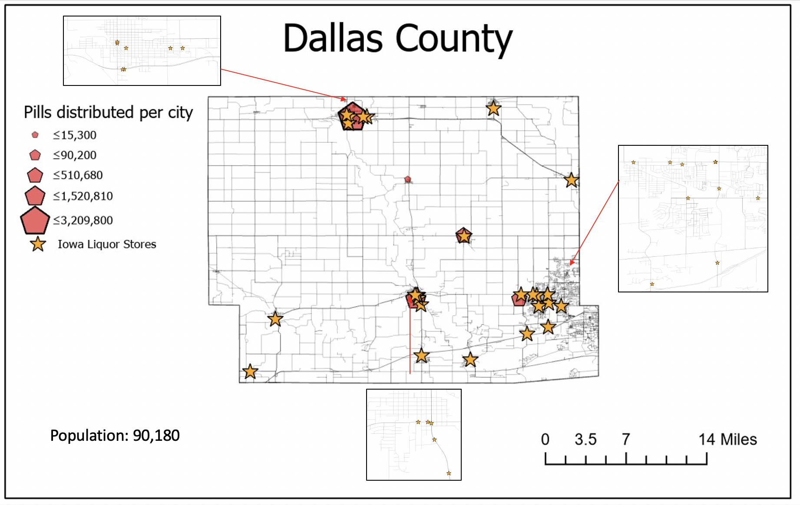

The map below displays a map of Iowa with a control layer option to display an open street map, a world imagery map, a choropleth map, and a graduated symbols map. The graduated symbols map displays the number of drug induced mortalities in 7 Iowa counties for the year 2014. To see the number of drug induced mortality, click on the circle. The choropleth map displays the pain pill distribution rate of pain pills distributed per person per county for the year of 2014. To navigate through this information, please use the layer control in the top right-hand side of the map to turn the layers on and off. You can also use the buttons at the bottom of the map to zoom into an urban area and a rural area. To learn more about the differences between urban and rural areas, scroll to the bottom of the page to see maps I created for my Intro to GIS course.
The data for this map was retrieved from the Center for Disease Control and The Washington post. The Center for Disease Control only reported 7 counties with drug induced substance mortality for the year 2014. To retrieve the data for mortalities, please find it here. To locate the pain pill distribution data, please find it here .
Press the button to see the features of Dallas County:The images below show the number of pain pills distributed per person per year between 2006 and 2012 as a graduated star symbol for Dallas and Cass County. The stars are placed on the cities in each county and represent the number of pills distributed per person per year for that city or town. You'll notice that Dallas county and Cass County distributed similar amounts of pain pills per person per year despite differences in population size.
 